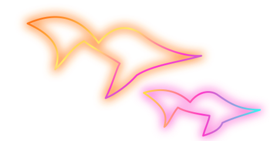

RAUSO
Gemeinsam
mehr erleben.
Die schönsten Orte Österreichs und Menschen,
die auch etwas unternehmen möchten.
Freizeitorte entdecken
Restaurants, Thermen, Ausflüge und mehr
Highlights aus Wien & Umgebung
Geprüfte AdressenAusgewählte echte Orte – nicht nach deinem Umkreis gefiltert. Öffnungszeiten und Preise bitte beim Anbieter prüfen.
Ortsdaten: © OpenStreetMap-Mitwirkende (ODbL). Angaben können unvollständig sein. Kartenkacheln © OpenStreetMap-Mitwirkende.
DABEI SEIN
Wer hat Lust?
Finde gemeinsame Unternehmungen oder plane selbst etwas.
Geplante Unternehmungen
GEMEINSAM MIT KINDERN
Familien & Unternehmungen
Familienausflüge, Spielgruppen und entspannte Treffen. Kinder brauchen kein eigenes Profil.
Spielplatz · Tierpark · Basteln · Ausflüge
Für Familien
Familienfreundliche Vorschläge und Treffen
DEINE PLÄNE AUF EINEN BLICK
Meine Treffen
Alle Unternehmungen, bei denen du zugesagt hast, Interesse gezeigt hast oder die du organisiert hast.
VERBINDEN
Kontakte & Chats
Suche neue Kontakte, bestätige Anfragen und schreibe privat.
OPTIONAL · AB 18
Dating & Matches
Nur wenn du Dating in deinem Profil aktivierst. Chat erst nach einem gegenseitigen Like.
ZUSAMMEN PLANEN
Unsere Wunschlisten
Favoriten und gemeinsame Ausflugslisten. Geteilte Listen sind nur mit bestätigten Mitgliedern sichtbar.
PROGRAMM & TICKETS
Kino & Events
Offizielle Programmdaten erscheinen nach Verbindung einer autorisierten Schnittstelle.
AKTUELLES
Meine Benachrichtigungen
Zusagen, Nachrichten und Hinweise an einem Ort.
GESCHÜTZTER BEREICH
RAUSO Verwaltung
Meldungen, Moderation und Verwaltungsaufgaben. Zugriff ausschließlich mit serverseitiger Adminrolle.
DEIN BEREICH
Mein Profil
Gestalte dein Profil, verwalte deine Fotos und wähle freiwillig, was du veröffentlichen möchtest.